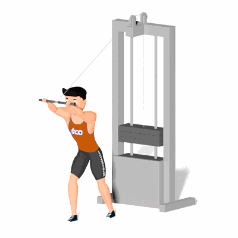

Tríceps Testa Cross Over

Tríceps Testa no Cross Over, exercício para fortalecimento e hipertrofia dos músculos tríceps, em especifico o tríceps braquial.
Ficha Técnica
Tipo: Musculação
Grupo Muscular: Tríceps
Aparelho: Nenhum
Músculos: Nenhum
Como realizar
- Na posição em pé, próximo ao aparelho Cross Over;
- Posicione a roldana do Cross Over no nível mais alto;
- Com as duas mãos, pegue a barra com as palmas das voltadas para cima e posicione para trás da cabeça;
- Cotovelos flexionados e apontados para frente, manter os braços próximos da cabeça;
- Utilizando a forma dos tríceps, empurre a barra para cima deixando os cotovelos quase estendidos;
- Retorne à posição inicial de fora controlada movimentando somente os antebraços;
- Durante a execução, o restante do corpo deverá permanecer imóvel;
- Repita os movimentos, conforme o número de repetições orientado pelo professor.
 RC STORE
RC STORE